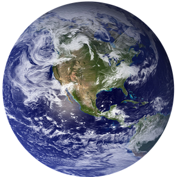
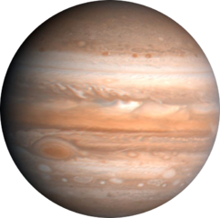
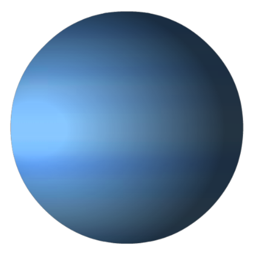
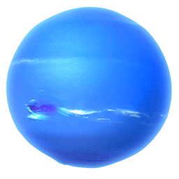

Pregled vseh planetov
| planet |
obhodni čas [zem. leta] |
oddaljenost od Sonca [a. e.] |
število naravnih satelitov |
ekvatorialni polmer [km] |
površinska težnost [m/s2] |
ubežna hitrost [km/s] |
povprečna temp. [K] |
magnituda |
 Merkur Merkur |
0,24 |
0,387 |
0 |
2439,7 |
3,7 |
4,25 |
340 |
do -1,9 |
.gif) Venera Venera |
0,62 |
0,72 |
0 |
12103,7 |
8,87 |
10,36 |
737 K |
-4,6 |
| Zemlja |
1 |
1 |
1 |
6378 |
9,81 |
11,2 |
287 K |
/ |
 Mars Mars |
1,88 |
1,523 |
2 |
6804,9 |
3,69 |
5,027 |
210 |
−2,9 |
| Jupiter |
11,862 |
5,2 |
79 |
71.492 |
24,79 |
59,5 |
152 |
−2,8 |
 Saturn Saturn |
29,657 |
10,058 |
60 |
60.268 |
8,96 |
35,5 |
134 |
0,7 |
| Uran |
84,07 |
19,191 |
27 |
51.118 |
8,69 |
21,29 |
68 |
5,5 |
| Neptun |
165,16 |
30,1 |
14 |
24.764 |
11,15 |
23,5 |
72 |
7,7 |